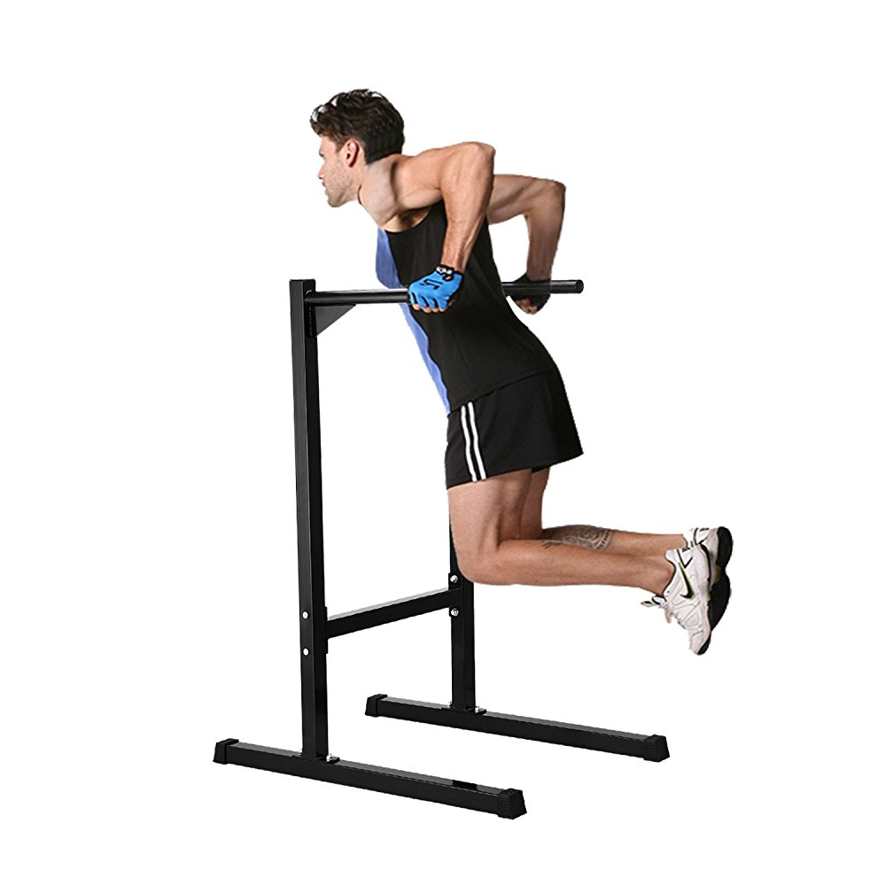

딥스는 가슴 하부, 삼두근이 주로 발달되는 운동[1]으로 자신의 체중을 이용하는 방식이며, 관절 가동력의 정확한 컨트롤을 요하는 점 그리고 잦은 부상의 위험때문에 흔히 운동 상급자 대상의 고강도 운동으로 분류된다. 개개인의 근육 발달 정도에 따라 초심자에게 턱걸이보다 힘든 운동일수도 더 쉬운 운동일 수도 있다.[2] 다만 부상의 위험성은 턱걸이보다 딥스가 넘사벽이므로 전문가의 지도없이는 초보자에겐 권장되지 않는 운동이다. 정확한 자세로 실시하지 않는 이상 초보자의 어깨를 만성적으로 작살내기 딱 좋은 운동이기 때문.
